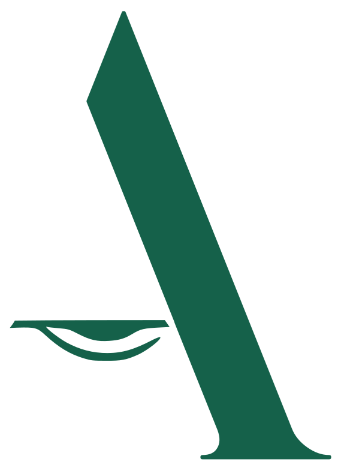

Ambition BeginsWho it actually catches, which risk tier bites, the dates that matter now, and what it costs to get wrong.
Article 2(1)(a) applies this law to providers placing AI systems on the market or putting them into service in the Union, "irrespective of whether those providers are established or located within the Union or in a third country." Location of the company is not the test. The test is where the system's output lands.
Article 2(1)(g) closes the loop: the Act protects affected persons located in the Union. If your system evaluates, ranks, scores, or decides something about someone physically in the EU — a job applicant, a loan applicant, an insurance customer — that person's location is what pulls you in, not your own.
Worked example: a US-based HR-tech company, zero EU presence, selling a résumé-screening tool to employers who happen to have applicants in Europe. Verdict, worked through the actual articles: fully in scope. And it compounds — if the employer-customer is also a US company evaluating a candidate sitting in the EU, that employer is independently caught too, under the same provision.
If your system's output touches someone in the EU, stop assuming this isn't yours to deal with.
Eight practices, no exceptions, no compliance path: manipulative AI, exploiting vulnerability, social scoring, predictive-policing-by-personality, untargeted facial-recognition scraping, workplace/school emotion recognition, biometric categorization of protected traits, and real-time public facial recognition by police outside a narrow judicially-authorized list. If you're here, the answer is stop.
Annex III: employment and recruitment, education access, credit scoring, insurance pricing, law enforcement, migration, critical infrastructure, biometric identification. Means a risk management system, governed training data, technical documentation, human oversight, and public-database registration before market. The narrow carve-out for purely procedural or human-assistive tools disappears entirely the moment the system profiles individuals.
Chatbots, deepfakes, AI-generated content. No conformity assessment — just tell people they're talking to a machine, and label synthetic content as synthetic. Cheap to fix, expensive to ignore.
Spam filters, AI-enabled games, most of what companies actually ship. Most companies overestimate their exposure here and underestimate it in the high-risk tier — worth checking which mistake you're making.
Provider — you built the system, it goes to market under your name. Deployer — you're using someone else's system under your own authority. These carry completely different obligation sets, and a subscription or licensing relationship doesn't soften either role. The Act doesn't recognize an informal "just a user" category — if you're making a decision based on the tool's output, under your own authority, you are a deployer, regardless of what your invoice says.
A provider's job: build it right, document it, give the deployer enough transparency to use it properly. A deployer's job: use it correctly, assign real human oversight, tell affected people when required, run a fundamental-rights assessment where the law calls for one. If a provider ships a black box with no real documentation, the deployer can't comply even if they want to — and that failure traces back to the provider.
If you fine-tune, wrap, or substantially modify someone else's foundation model and ship it as your own product, Article 25 can reclassify you as the provider of what you shipped — inheriting the full obligation set. And if you build a high-risk use case on top of a general-purpose model, your Annex III obligations don't disappear because the underlying model came from somewhere else. Using someone else's foundation model narrows your work — it doesn't erase it.
If your system was already on the market before the relevant date, you get a grace period — but only until you make a "significant change" to it. Waiting for that trigger as a strategy, in a high-enforcement category like hiring or credit, is a bet against attention you probably don't want to make.
Smaller companies get the lower figure in each band, and regulators must weigh proportionality and cooperation. But the structure is turnover-based on purpose — it scales with the company, which means it scales with you too, as you grow into the category you're currently underestimating.
Classify honestly. Run your actual product against Annex III, not against what you hope it isn't. If it profiles people, assume high-risk until proven otherwise.
Figure out which role you're in — provider, deployer, or both, for different parts of your stack. Most companies are more than one at once and don't realize it.
Check your training data governance before anything else — bias in a high-risk system is precisely the harm this law was built to catch.
Build the paper trail now, not later. Technical documentation, risk management records, logs — an ongoing file, not a one-time filing.
Get the mechanics right. For most high-risk systems outside Annex I product categories, this is internal self-assessment, not a third-party audit — cheaper than assumed, if the internal work is genuine.
Know the door isn't closed to you for being small. The Act requires member states to give SMEs and startups priority sandbox access, reduced fees, and simplified templates — if you actually engage with it.
Classifying your actual product against Annex III — and working out whether you're a provider, a deployer, or both — is exactly the kind of gate that's cheap to check now and expensive to discover later. Ayin can walk your fact pattern through the Act the same way, in a short conversation.